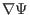
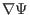
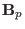
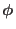

Next: Shape parameters of a Up: Axisymmetric magnetic field Previous: Relation of with the
In most part of a tokamak plasma, the contours of  on
on  plane are
closed curves. As discussed above, the contours of
plane are
closed curves. As discussed above, the contours of  are the projection
of magnetic lines on the poloidal plane. Closed contours of
are the projection
of magnetic lines on the poloidal plane. Closed contours of  implies
closed magnetic surfaces, as shown in Fig 3.
implies
closed magnetic surfaces, as shown in Fig 3.
The innermost magnetic surface is actually a line, which is usually called the
magnetic axis (in Fig. 3,  labels the magnetic axis).
Because the magnetic axis is the point of maximum/minimum of
labels the magnetic axis).
Because the magnetic axis is the point of maximum/minimum of
 ,
the value of
 is zero at the magnetic axis. As a result, the
poloidal component of the equilibrium magnetic field is zero on magnetic axis
(refer to Eq. (8)), i.e., the magnetic field has only toroidal
component there.
,
the value of
 is zero at the magnetic axis. As a result, the
poloidal component of the equilibrium magnetic field is zero on magnetic axis
(refer to Eq. (8)), i.e., the magnetic field has only toroidal
component there.
As discussed in Sec. 1.4, the poloidal magnetic flux enclosed by a
magnetic surface  (the poloidal magnetic flux through the toroidal
surfaces
(the poloidal magnetic flux through the toroidal
surfaces  ) is given by
) is given by
| (20) |
Also note that, since the poloidal magnetic field can be written as
, the condition
means
 points in
the anticlockwise direction (viewed along
 direction), and
 means
points in
the clockwise direction.
means
points in
the clockwise direction.
yj 2018-03-09